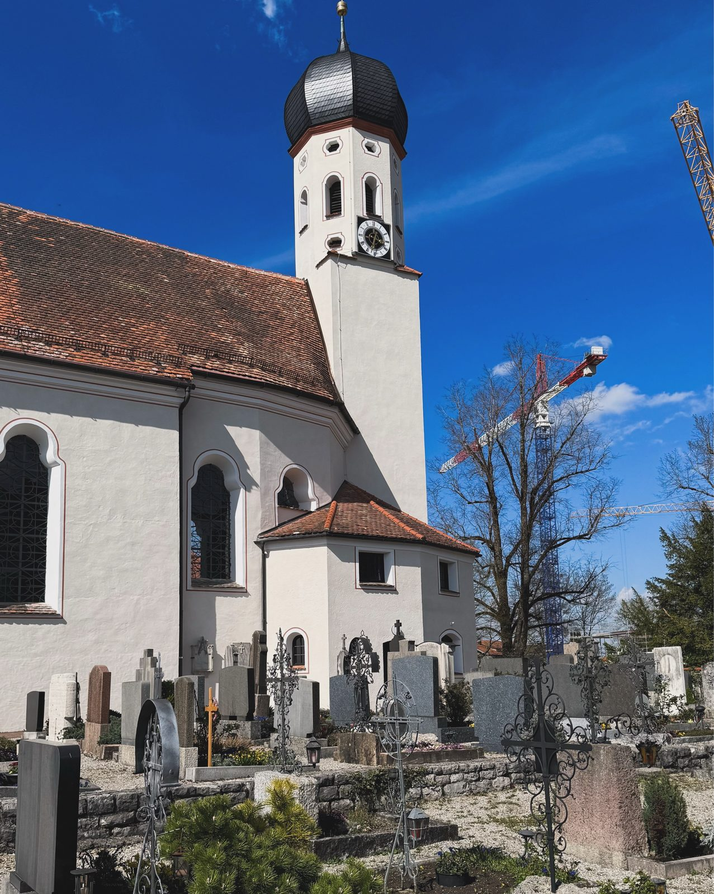
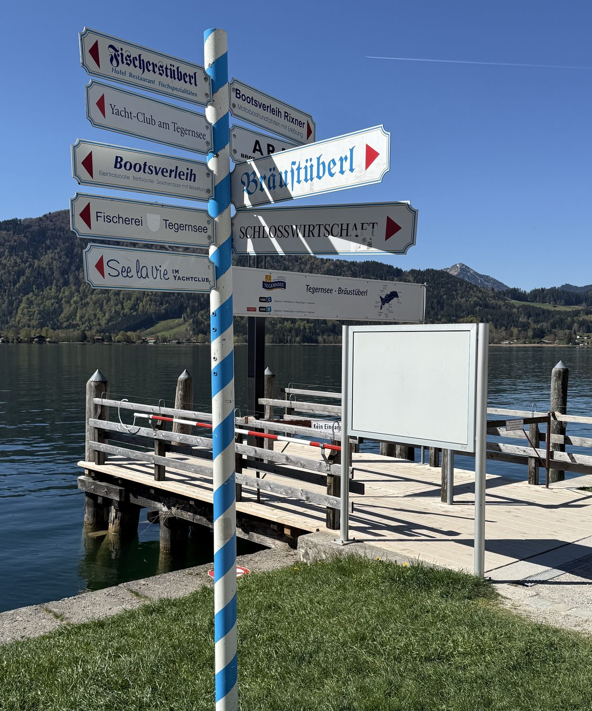
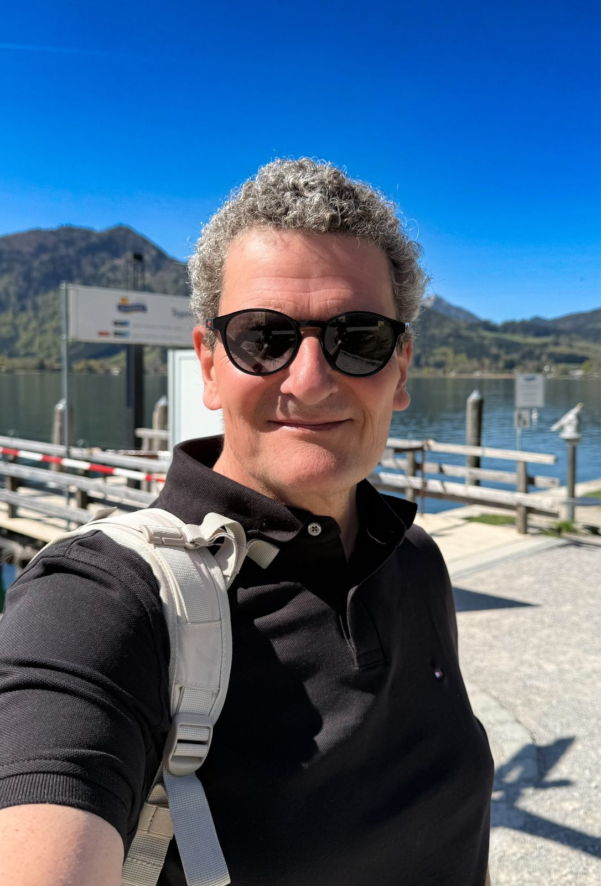
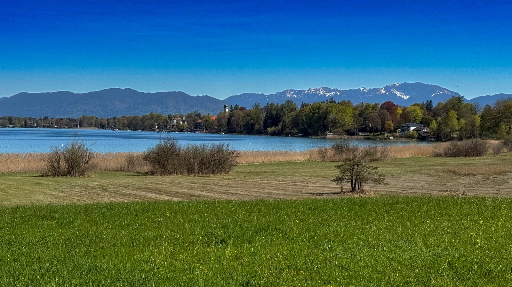
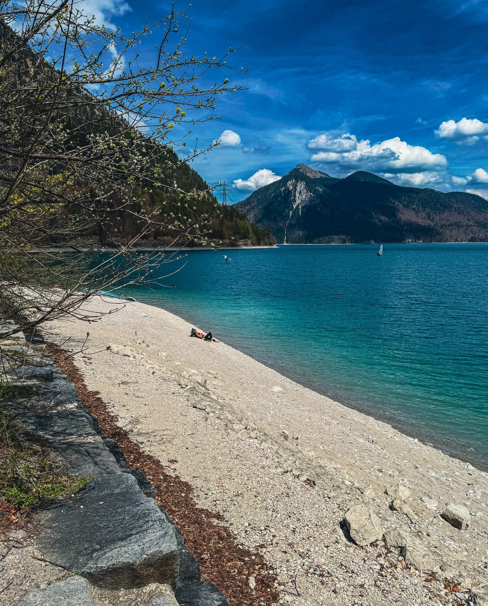
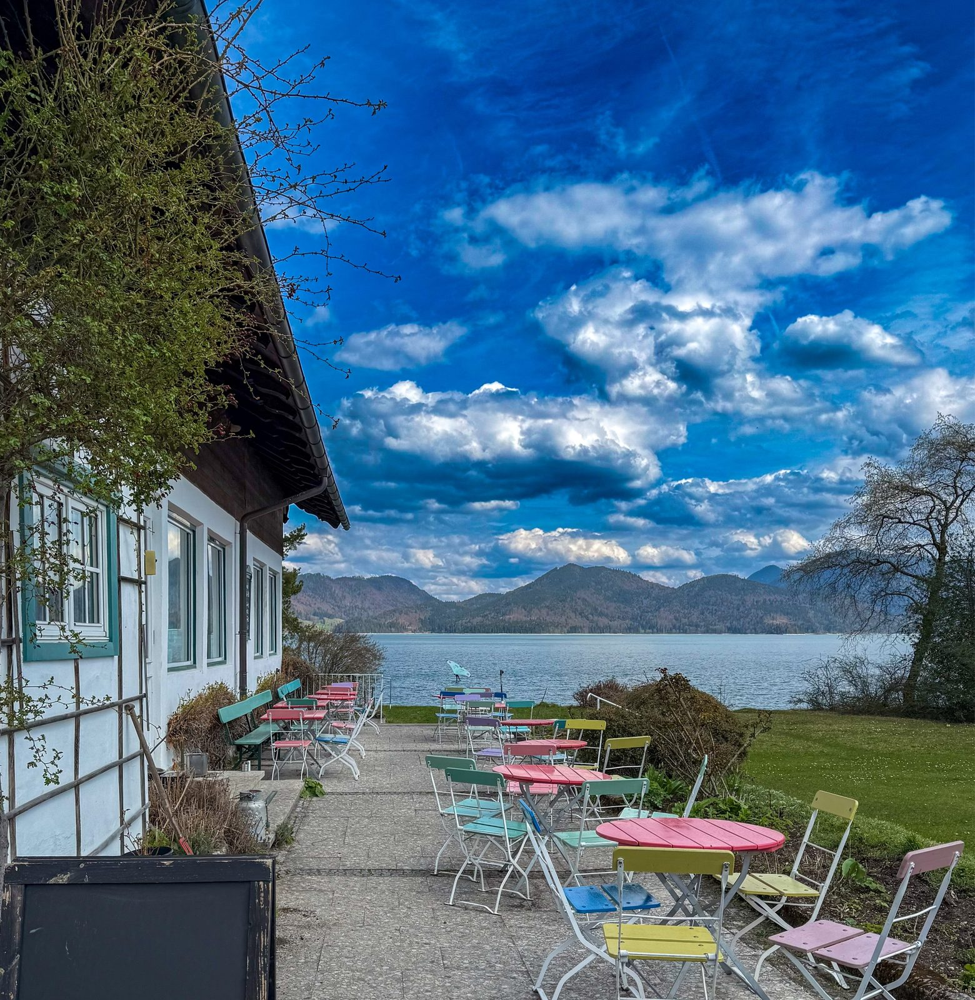
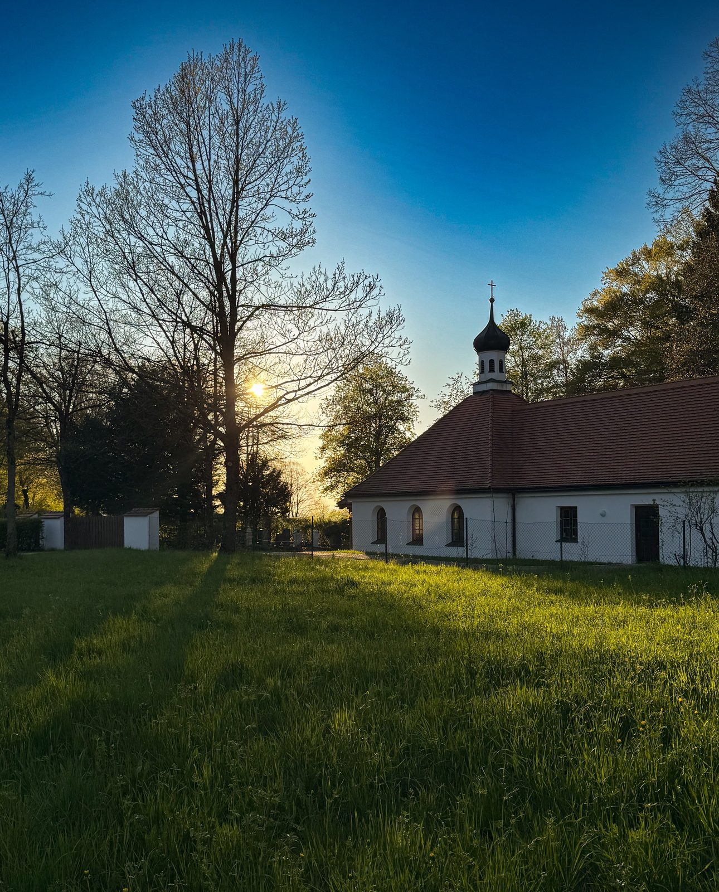
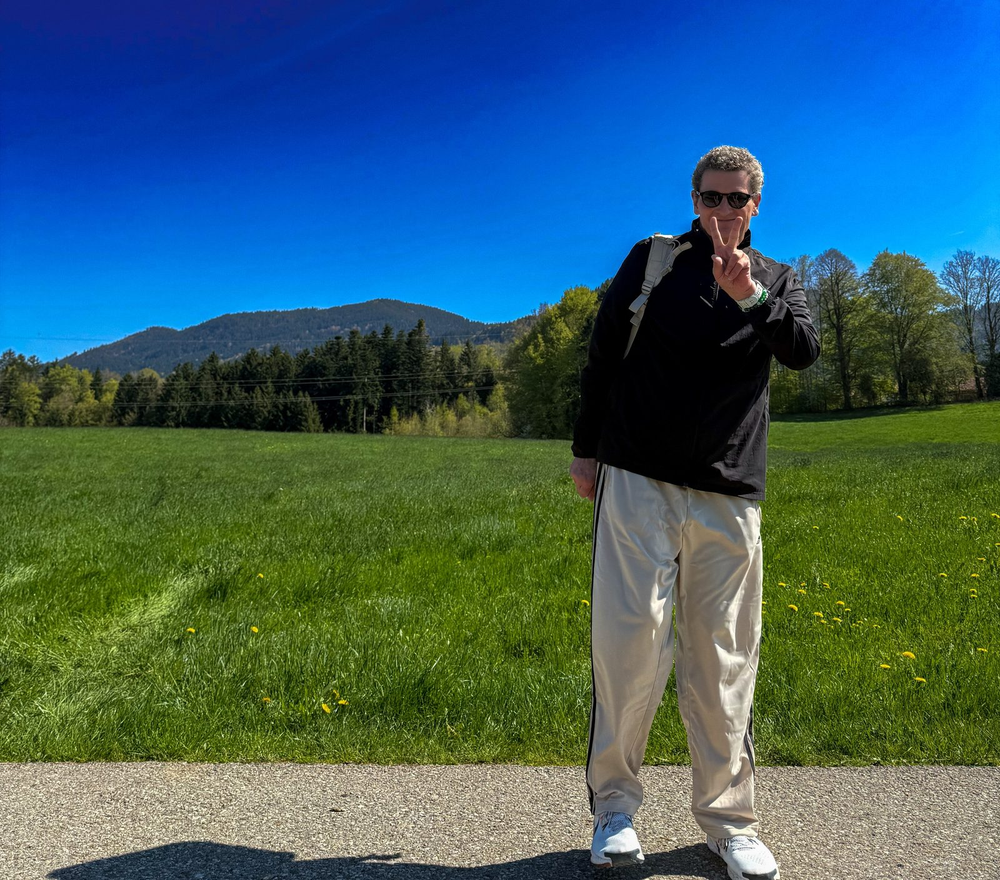

Ich stehe an einem Frühlingsmorgen auf einer Wiese im Tölzer Land. Voralpen im Dunst. Hinter mir die Kirchturmuhr, die zur vollen Stunde schlägt. Erster von zehn Tagen in Bad Heilbrunn. Kirschblüten. Bergluft. Wanderschuhe.
Warum „Bayerisches Lakeland"?
Die Engländer haben ihren Lake District. Die Bayern haben nie einen Namen dafür erfunden. Also habe ich einen fiktiven: Bayerisches Lakeland. Zwischen Loisach und Isar liegt eine Seenlandschaft, die sich vor nichts verstecken muss. Tegernsee. Starnberger See. Walchensee. Kochelsee. Staffelsee. Alle in kurzer Reichweite. Jeder mit eigenem Charakter. Drei habe ich bereist. Der eine mondän. Der andere fjordblau. Der dritte so still, dass man die Ruderboote knarzen hört. Bad Heilbrunn liegt mittendrin. Angelpunkt eines Kompasses, dessen Nadel immer auf Wasser zeigt.
Der Ort ist seit Jahrhunderten aufs Gesundwerden spezialisiert. 1159 taucht der Weiler Heilbrunn erstmals in einer Urkunde auf, wegen der jodhaltigen Quelle. 1659 kurte hier Kurfürstin Henriette Adelheid von Savoyen. Seit 1832 heißt die Quelle Adelheidquelle. Im 19. Jahrhundert kurte man in „Adelheidsbad" gegen so ziemlich alles. Heute macht das Moor die Arbeit. Ich war historisch korrekt unterwegs. Wandern. Genießen. Kurieren. In dieser Reihenfolge. Jeden Tag.

Tegernsee: Wo Bayern seine Postkarten druckt
Erster Ausflug. Tegernsee. Am Anleger ein blau-weiß gestreifter Schilderbaum. Sieht aus, als hätte jemand die gesamte bayerische Gastronomie an einen einzigen Mast genagelt. Bräustüberl rechts. Fischerstüberl links. „See la vie" geradeaus. Wortwitz am Wegweiser. Hier bin ich richtig.
Am Ufer dann die Momente, für die man diese Landschaft so liebt. Ein Bootshaus aus grauem Holz. Davor Wasser so klar, dass die Kiesel am Grund aussehen wie hinter Museumsglas. Ich bin die Promenade dreimal auf und ab. Im Bräustüberl hineingeschaut. Pflichtprogramm. Das Kloster braut seit 1675. Am Steg das Selfie. Grinsen inklusive. Man fühlt sich wohl hier.



Starnberger See: Der König und das Wasser
Dann der Starnberger See. Der Ort, an dem Bayern seine größte Geschichte erzählt. Am Ostufer bei Berg endete am Pfingstsonntag, dem 13. Juni 1886, das Leben von König Ludwig II. Wenige Tage nach seiner Entmündigung. Im seichten Wasser nahe dem Ufer. Unter bis heute ungeklärten Umständen. Ein Holzkreuz im See markiert die Stelle.
Ludwig, der Neuschwanstein in die Berge träumte. Ausgerechnet er ertrank in einem der friedlichsten Gewässer des Landes. Wer am Ufer steht und die Kette der Voralpen im Süden sieht, versteht beides. Warum dieser König diese Landschaft nie verlassen wollte. Warum sie ohne seine Geschichte nur halb so tief wirken würde.

Walchensee: Ludwigs Lieblingssee, jetzt auch meiner
Die Berge rund um diesen See liebte schon Ludwig. Allen voran den Altlacher Hochkopf. Ich verstehe inzwischen auch, warum. Der See liegt 800 Meter hoch zwischen den Bergen. Leuchtet in einem Türkis, das man eher auf einer Karibik-Postkarte vermuten würde. Kein Wunder, dass ihn alle „bayerische Karibik" nennen.
Eingekehrt wird direkt am Ufer. Eine Seeterrasse mit bunten Klappstühlen. Rosa. Gelb. Türkis. Als hätte jemand das Farbschema des Sees auf Gartenmöbel übertragen. Kaffee mit diesem Blick. Jede Rooftop-Bar dieser Welt wirkt dagegen wie ein Wartezimmer.


Die Kunst des Kurierens
Zwischen den Seewochenenden: Bad Heilbrunn im Grundrauschen. Morgens eine Runde durchs Tölzer Land. Mittags Runde mit Bergblick. Nachmittags eine Anwendung. Abends die schönste Medizin: der Spaziergang zur kleinen Kapelle am Ortsrand. Die Sonne versinkt hinter den Bäumen. Das Gras läuft golden an. Kein Programm. Keine Deadline. Kein „müsste man noch". Der Puls sortiert sich von allein.


Ich habe Sonnenuntergänge auf verschiedenen Kontinenten fotografiert. Der über den Voralpen kostet keinen Flug. Und verneigt sich vor keinem davon.
Fazit
Zehn Tage Oberbayern haben etwas geschafft, das keine Fernreise kann. Sie haben die eigene Landkarte neu gezeichnet. Das Bayerische Lakeland braucht keinen Vergleich mit der großen weiten Welt. Es braucht nur jemanden, der stehen bleibt und hinschaut. Die Seen glasklar. Die Berge zum Greifen. Die Geschichte eines Königs im Wasser gespiegelt. Über allem diese Ruhe. Man kann sie nicht buchen. Nur zulassen.
Mein Rat? Quartier in Bad Heilbrunn nehmen. Die Seen als Sternfahrten planen. Surfen oder Kitesurfen am Walchensee, dem deutschen Pendant zum Gardasee: Hier weht ein zuverlässiger Wind aus nördlichen Richtungen, der zuerst im Norden des Sees auftritt.
📍 Bad Heilbrunn auf Google MapsQuellen & Recherche
Diese Story basiert nicht nur auf eigenen Erinnerungen. Ein paar Fakten habe ich recherchiert und mit folgenden Quellen abgeglichen. Wer will, kann selbst nachlesen.
- Geschichte von Bad Heilbrunn, Gemeinde Bad Heilbrunn
- Adelheidquelle, Gemeinde Bad Heilbrunn
- Bad Heilbrunn, Wikipedia
- Herzoglich Bayerisches Brauhaus Tegernsee, Wikipedia
- Historie, Brauhaus Tegernsee
- Ludwig II. (Bayern), Wikipedia
- Tod König Ludwigs II., Haus der Bayerischen Geschichte
- Walchensee, Wikipedia
- Ludwig II. und die Berge am Walchensee, taz
- Windsurfen und Kitesurfen am Walchensee, spotnetz.de